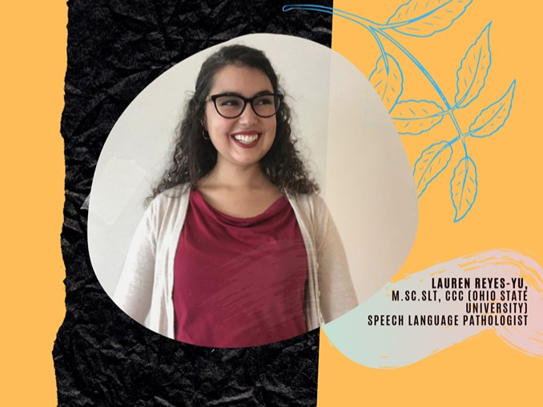
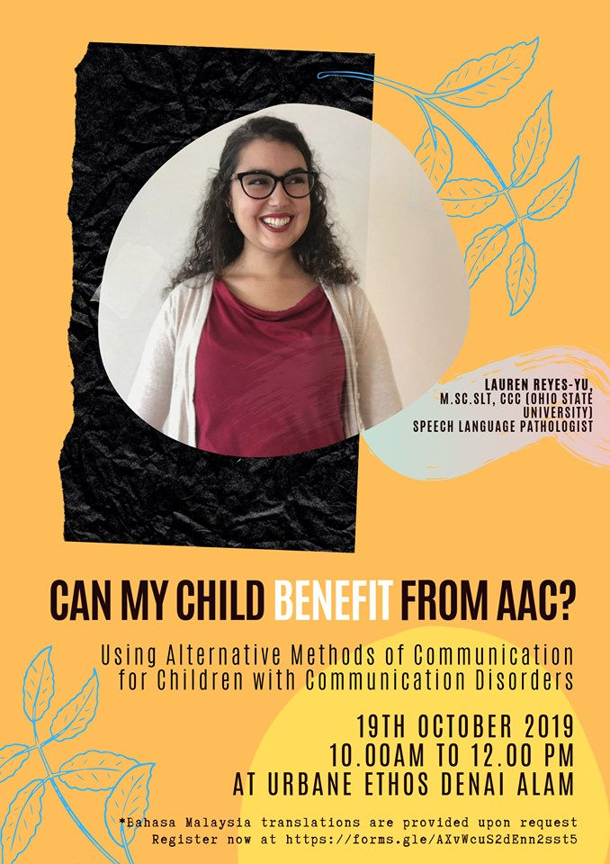

Speech & Language
Can My Child Benefit From AAC?
2019-09-10 · 2 min read

Are you having trouble communicating with your child?
Join us with Lauren Reyes-Yu as she talks about the different methods of communication that can be used for children with communication disorders.
Lauren Reyes-Yu earned her B.A. in Speech and Hearing Science (2013) and her M.A. in Speech-Language Pathology (2015) from The Ohio State University in the United States. During graduate school, her research focused on the development of phonological awareness skills in bilingual Spanish-English speaking preschool students. After completing her education, she worked in American public schools with students with a variety of communication disorders. One of her professional passions includes working with students requiring the use of augmentative and alternative communication (AAC) technology. She has helped students utilize picture exchange communication systems (PECS), communication devices, American Sign Language, and various apps to communicate. She also enjoys educating families about AAC communication and working with them to find the best communication method for their children.

REGISTER HERE: https://forms.gle/AXvWcuS2dEnn2sst5
Date: Saturday, 19th October 2019 Time: 10.00 am - 12.00 pm Address: Urbane Ethos Early Intervention Center, 4, Jalan Elektron E U16/E, Denai Alam 40160 Shah Alam
For more information, contact us at (+603) 7734 3044, WhatsApp us at (+6013) 249 0069 or urbaneethoseic@gmail.com
** Bahasa Malaysia translations are provided upon request
#urbaneethos #urbaneethosearlyinterventioncenter #speechtherapy #specialneeds #event